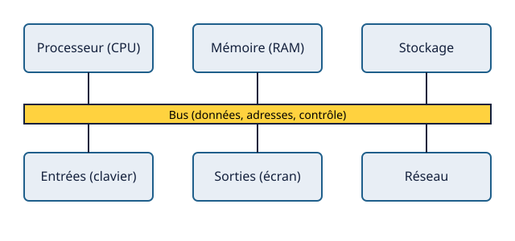
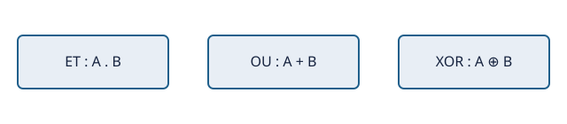

Architecture et électronique
Architecture d'un ordinateur
- Processeur : exécute les instructions.
- Mémoire : RAM (rapide, temporaire) et stockage (durable).
- Entrées/sorties : clavier, écran, réseau.
- Bus : relient tous ces éléments.

Numération
| Décimal | Binaire | Hexadécimal |
|---|---|---|
| 10 | 1010 | A |
| 25 | 11001 | 19 |
| 255 | 11111111 | FF |
Méthode : divise par 2 en notant les restes, puis lis-les de bas en haut. Ajoute tes propres conversions détaillées.
Portes logiques
| A B | ET | OU | XOR | NON A |
|---|---|---|---|---|
| 0 0 | 0 | 0 | 0 | 1 |
| 0 1 | 0 | 1 | 1 | 1 |
| 1 0 | 0 | 1 | 1 | 0 |
| 1 1 | 1 | 1 | 0 | 0 |
